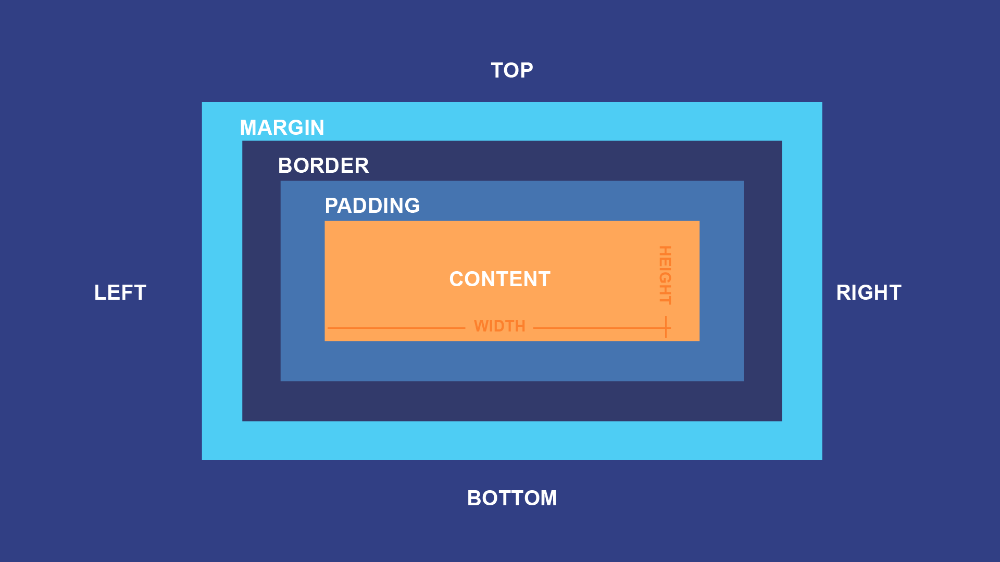
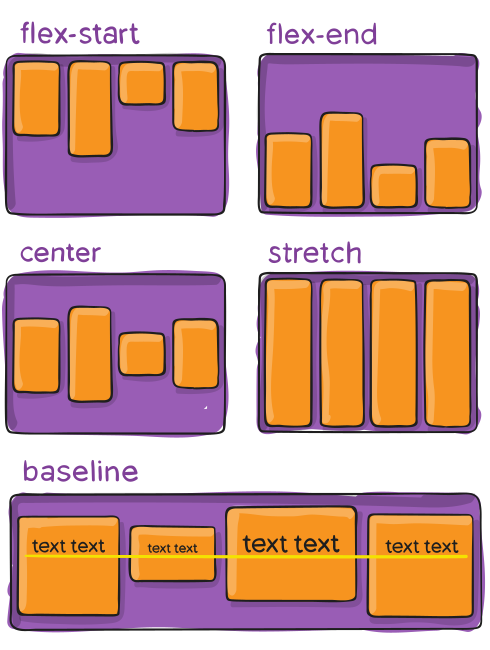
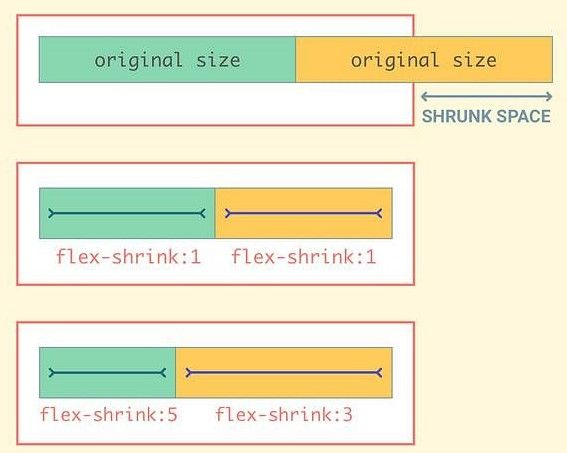

CSS (Cascading Style Sheets)
- Selectors
- CSS Box Model
- Positioning
-
Layout
- Flexbox


- Cascading Style Sheets is a style sheet language used for describing the presentation of a document written in a markup language such as HTML.
- CSS describes the visual style and presentation of the content written in HTML.
A css rule has the following syntax:
Selector {
property : value;
}
A CSS rule can be written in three ways.
- INLINE CSS: Written inside the html element as style={property:value} attribute.
- INTERNAL CSS: Written inside <style> element in the <head>
- EXTERNAL CSS: Written as a separate .css file and linked with html file using the <link> element in the <head>
Overriding Priority:
INLINE > INTERNAL > EXTERNAL
css selectors
CSS selectors are used to "find" (or select) the HTML elements you want to style.
Simple Selectors
- Element Selector (*element-name*) selects HTML elements based on the element name.
- Id Selector (#id) uses the id attribute of an HTML element to select a specific element.
- Class Selector (.class) selects HTML elements with a specific class attribute.
- Universal Selector (*) selects all HTML elements on the page.
Combinator Selectors
- Descendant selector (space) matches all elements that are descendants of a specified element, i.e. all elements under the parent element such as direct children, grand children etc.
- Direct Child selector (>) selects all elements that are the children of a specified element, i.e. only elements that are direct children.
- Adjacent sibling selector (+) is used to select an element that is directly after another specific element.
- General sibling selector (~)selects all elements that are next siblings of a specified element.
Pseudo Classes
- A pseudo-class is used to define a special state of an element.
- Syntax of defining pseudo class is:
selector:pseudo-class {
property: value;
}
Example
div {
background-color: red;
}
div:hover {
background-color: green;
}
Selector Priority
Inline style > Id selector > Class/pseudo class selector > Element selector > Universal selector >"
CSS Box Model
The CSS box model is essentially a box that wraps around every HTML element. It consists of: margins, borders, padding, and the actual content.
Positioning
The position property can help you manipulate the location of an element.
Static
HTML elements are positioned static by default.
Static positioned elements are not affected by the top, bottom, left, and right properties.
An element with position: static; is not positioned in any special way; it is always positioned according to the normal flow of the page:
Relative
An element with position: relative; is positioned relative to its normal position.
Setting the top, right, bottom, and left properties of a relatively-positioned element will cause it to be adjusted away from its normal position.
Absolute
The element is removed from the flow of the document and other elements will behave as if it’s not even there whilst all the other positional properties will work on it.
ExampleFixed
The element is removed from the flow of the document like absolutely positioned elements. In fact they behave almost the same, only fixed positioned elements are always relative to the document, not any particular parent, and are unaffected by scrolling.
ExampleSticky
It allows you to make elements stick when the scroll reaches a certain point.
ExampleLayout
Layout is the way text, images and other content is placed and arranged on a webpage.
- Float layouts: The old way of building layouts of all sizes, using the float CSS property. Still used, but getting outdated fast.
- Flexbox: Modern way of laying out elements in a 1-dimensional row without using floats. Perfect for component layouts.
- CSS Grid: For laying out elements in a fully-fledged 2-dimensional grid. **Perfect for page layouts and complex components.**
Flexbox
Flexbox is a set of related CSS properties for building 1-dimensional layouts.
The main idea behind flexbox is that empty spaces inside a container element can be automatically divided by its child elements.
Flexbox makes it easy to automatically align items to one another inside a parent container, both horizontally and vertically.
Flexbox is perfect for replacing floats, allowing us to write fewer and cleaner HTML and CSS code.
How to make a Flexbox Cotainer ?
// On Parent
display: flex;
Flexbox Container Properties
1. flex-direction: To define the direction of main-axis

2. justify-content: To align items along main axis (horizontally by default)

3. align-tems: To align items along the cross axis (vertical by default)
4. gap: To create space between items, without using margin.

5. flex-wrap: To allow items to wrap into a new line if they are too large.

6. align-content: Only applies when there are multiple lines(flex-wrap: wrap).

Flex Items Properties
1. align-self: To overwrite align-items for individual flex items.

2. flex-grow: To allow a n element to grow(0 means no, 1+ means yes).

3. flex-shrink: To allow an element to shrink (0 means no, 1+ means yes)
